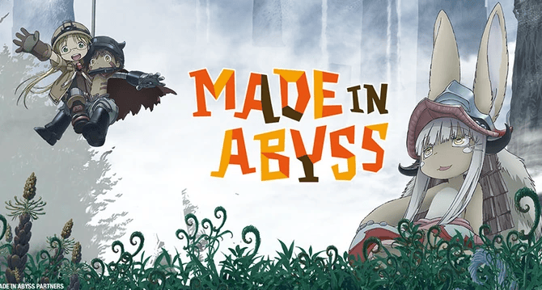

En este blog podras encontrar informacion sobre el anime y manga de Made in Abyss
Que es made in abyss
Made in Abyss es una serie de manga escrita e ilustrada por Akihito Tsukushi. La historia presenta una fosa enorme y de profundidad desconocida denominada «el Abismo», que alberga reliquias, flora y fauna peligrosas, y misterios relacionados con una civilización antigua

samuheredia73@gmail.com
Por que ver MiA
y las razones
Made in Abyss es un anime muy interesante con un mundo muy hermoso y una buena trama con buenos personajes para amantes de la historia y suspenso